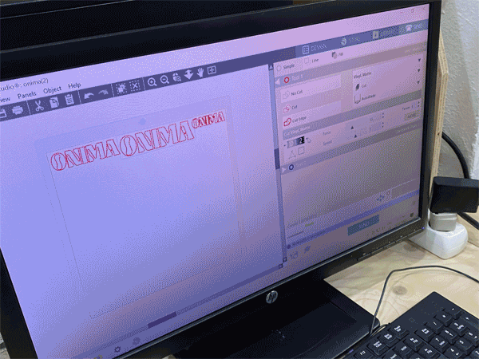
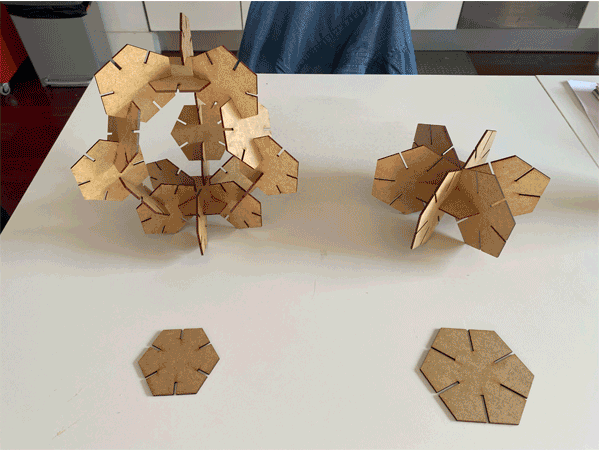
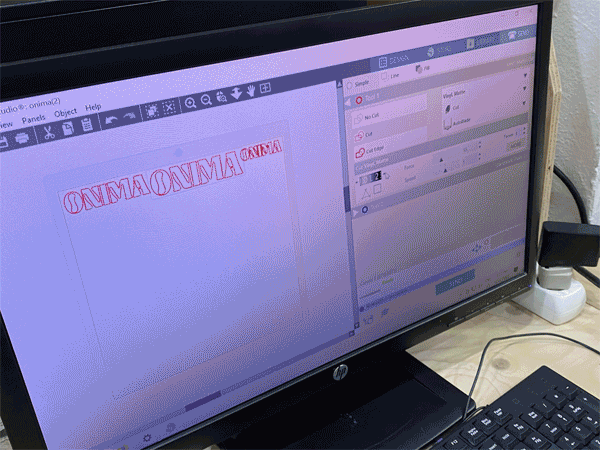
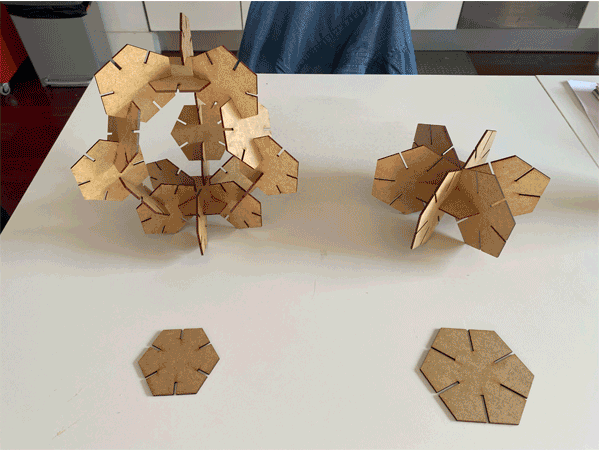

🗓 Week 3 / 9 February 2022
Materials that could be used with laser cutter: wood, cardboard, fabrics, plastics. We looked at the anatomy of the laser cutter machine and the parts that are crucial for functioning. Design considerations: tolerance, kerf: accounting for material that is burnt, Three golden rules of laser cutter: focus the material, check power, frequency and speed, and turn on extraction.
Assignment:
First, I made a quick test on the laser cutter with an AI logo I already had of my partner's hot sauce brand. The vinyl cutter was very straight forward and I was glad to have tried it. I would like to continue to use it for future projects.

Initially, I wanted to create a form that could be useful or related to my topics of interests at MDEF. Since I was completely green in working with 3D modeling softwares, I consulted a few of my classmates to decide on which software I should start with. After some thought, I decided to start with Rhino 3D and Grasshopper because it seemed most useful in the long run and compatible with various machines at Fab Lab BCN.
Although I wanted to make something relevant to my interests, I realized I was running behind in spending too much time conceptualizing what to make (also due to covid), and needed to just try creating and cutting something simple to understand the process first. Joaquin helped me start a basic Grasshopper shape: a triangle with divots in it, but we ran into an issue in finding the Grasshopper command that detects a line's midpoint. We struggled to find this function, and due to time limitations (my laser cutter appointment was coming up), we decided to try and figure it out later but in the meantime use Rhino to create the shape. I made a simple hexagon shape and a rectangle on one of the edges. I used the 'array' command to distribute the rectangle divots at the midpoints of each of the edges. Since we had already tested the kerf of the laser cutter and doing press-fit with the MDF, I knew the sidth of the rectangle had to be 2.4mm wide for a perfect fit.
At the laser cutter, I made a test of two shapes first and tried joining them. Then I realized that the lengths of the rectangle divots were too long, as when they were fit together, the length multiplied and went over the center of the piece. This created a problem because I wasn't able to fit multiple pieces in one. I had to quickly change the length of the rectangles, and I wished I had figured out the parametric design in Grasshopper. I manually modified the length from 25mm to 12mm in Rhino and made the pieces smaller as well, so to take up less space on the MDF board. I was happy with the way the pieces turned out. Although they were simple, because of their simplicity they provided many options for joining and creating different shapes.

Computer-Controlled Cutting
We learned about the history of laser cutting starting from the 1950s with the microwave application to the machines that we are using today. We reviewed the two main processes in computer aided manufacturing: additive and subtractive. Additive processes start with nothing and add material, ie. 3D machine. Subtractive processes start with the material and reduce, ie. laser cutter, vinyl, CNC.Materials that could be used with laser cutter: wood, cardboard, fabrics, plastics. We looked at the anatomy of the laser cutter machine and the parts that are crucial for functioning. Design considerations: tolerance, kerf: accounting for material that is burnt, Three golden rules of laser cutter: focus the material, check power, frequency and speed, and turn on extraction.
Assignment:
First, I made a quick test on the laser cutter with an AI logo I already had of my partner's hot sauce brand. The vinyl cutter was very straight forward and I was glad to have tried it. I would like to continue to use it for future projects.

Initially, I wanted to create a form that could be useful or related to my topics of interests at MDEF. Since I was completely green in working with 3D modeling softwares, I consulted a few of my classmates to decide on which software I should start with. After some thought, I decided to start with Rhino 3D and Grasshopper because it seemed most useful in the long run and compatible with various machines at Fab Lab BCN.
Although I wanted to make something relevant to my interests, I realized I was running behind in spending too much time conceptualizing what to make (also due to covid), and needed to just try creating and cutting something simple to understand the process first. Joaquin helped me start a basic Grasshopper shape: a triangle with divots in it, but we ran into an issue in finding the Grasshopper command that detects a line's midpoint. We struggled to find this function, and due to time limitations (my laser cutter appointment was coming up), we decided to try and figure it out later but in the meantime use Rhino to create the shape. I made a simple hexagon shape and a rectangle on one of the edges. I used the 'array' command to distribute the rectangle divots at the midpoints of each of the edges. Since we had already tested the kerf of the laser cutter and doing press-fit with the MDF, I knew the sidth of the rectangle had to be 2.4mm wide for a perfect fit.
At the laser cutter, I made a test of two shapes first and tried joining them. Then I realized that the lengths of the rectangle divots were too long, as when they were fit together, the length multiplied and went over the center of the piece. This created a problem because I wasn't able to fit multiple pieces in one. I had to quickly change the length of the rectangles, and I wished I had figured out the parametric design in Grasshopper. I manually modified the length from 25mm to 12mm in Rhino and made the pieces smaller as well, so to take up less space on the MDF board. I was happy with the way the pieces turned out. Although they were simple, because of their simplicity they provided many options for joining and creating different shapes.
